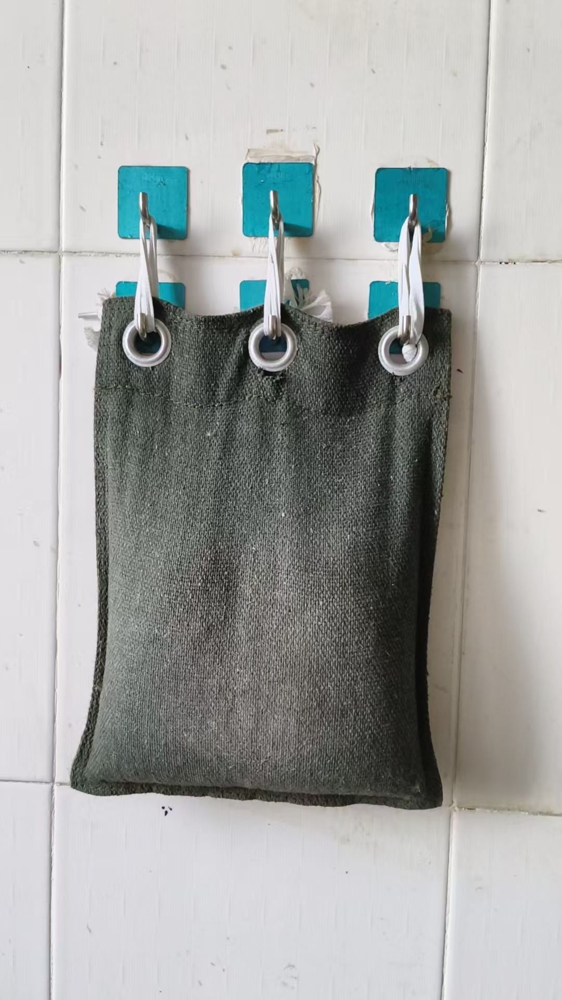
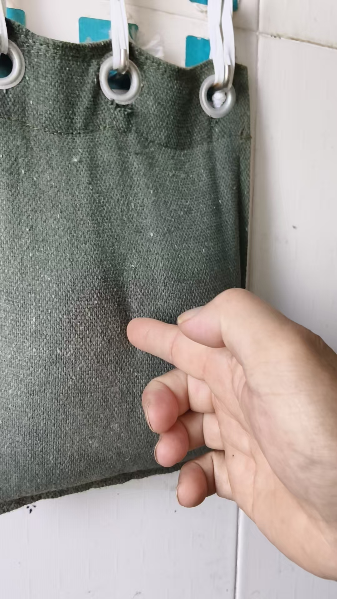
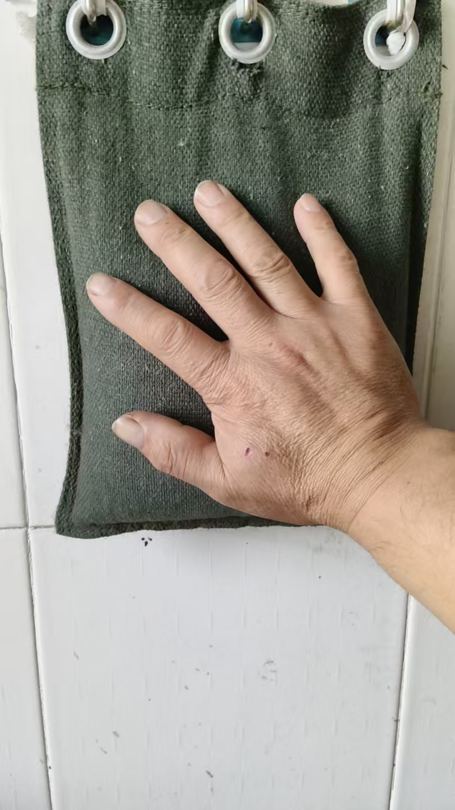
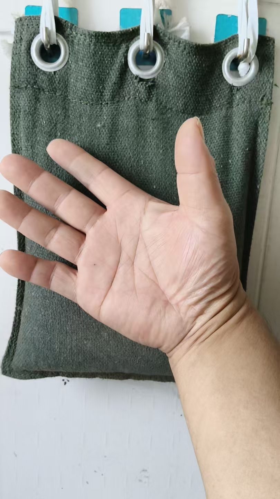
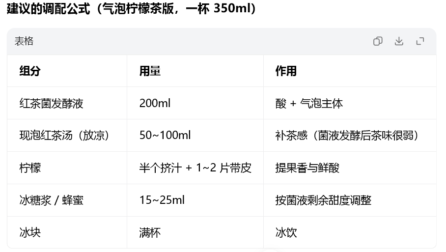
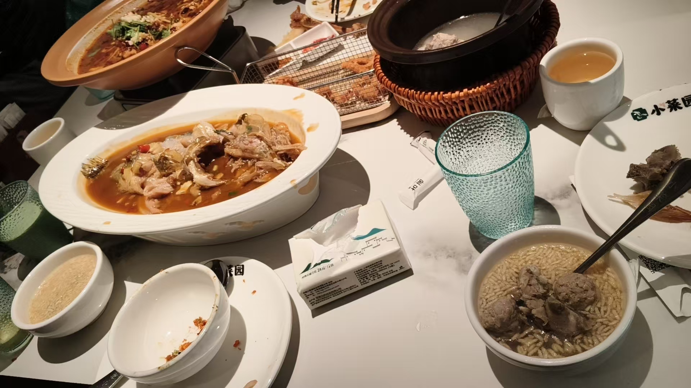
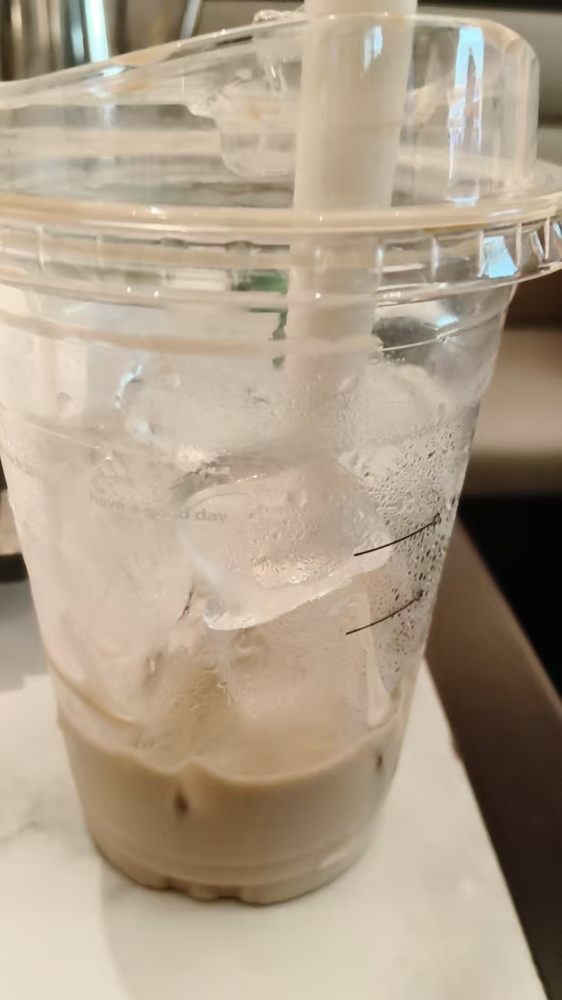
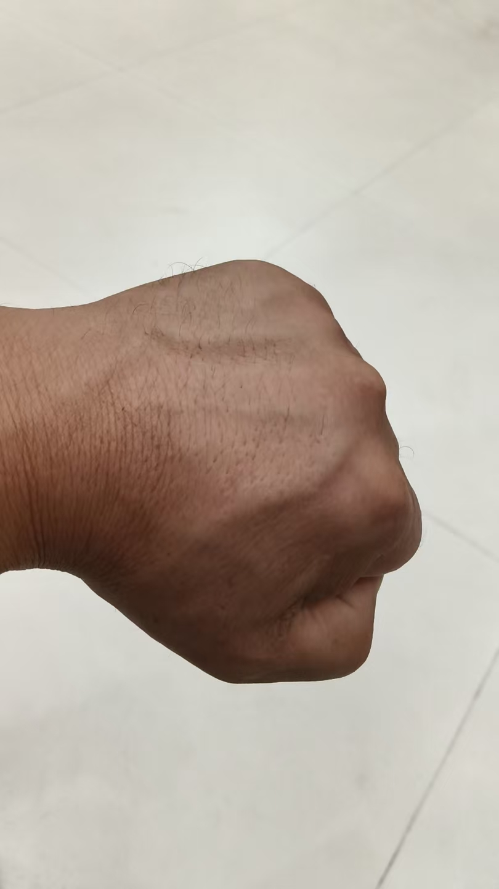

20261018每天打钢珠袋20分钟、穿钢板马甲跳10分钟
修炼修行 原始对话记录也就是说，那大力金刚掌，就不该练，抖音那人是自创的
不仅截屏丢失
我想再截屏的时候 那人已经被封号了
命该如此
有的是好方法，自创的不敢练
@紫鸢真人 练大力金刚掌咋滴了！为啥不该练！应该练很多年了吧
我是练了很多年了
该练
是说抖音那人自创的
每节都是气沉丹田
我想按照他的方法练一下，结果，截屏的照片不仅从手机里消失
再去找那个人 已经封号了
关注了也找不到了
也就是注定不该练
自创的容易出问题

钢珠袋
为什么说时间很紧，不够用
书法，画画都放下了
每天的习惯不能变
虽然不说，我是习惯了，每天打钢珠袋缩减成了二十分钟以内
穿钢板马甲跳跃，每天十分钟
这些都是不变的
不是说，我没说，就不做了
弹跳落地要轻，不能砰砰砰干扰楼下邻居
钢珠袋顺便就练了朱砂掌，跟指禅功

指禅

金刚掌

朱砂掌
是手背
不仅防身，还是传承
心里有危机感
现在有些家长让孩子学截拳道，学柔道，还有的送孩子去少林，武校
大多数家长，就没有这想法，
真正遇到事，没法脱身
社会和谐是表象，每天多少事发生
不知身有如来藏 唯欣寂灭厌尘劳
众生本有菩提种 悉在赖耶藏识中
若遇善友发大心 三种炼磨修妙行
永断烦恼所知障 证得如来常住身
菩提妙果不难成 真善知识实难遇
一切菩萨修胜道 四种法要应当知
亲近善友为第一 听闻正法为第二
如理思量为第三 如法修证为第四
一一《大乘本生心地观经》

红茶菌柠檬茶
@欢欢 我也觉得红茶菌有点单调
试试这个
@紫鸢真人 师父你要干啥啊[捂脸]要练成佛法！武功！轻功！美食！都天下第一啊[合十][合十][合十]
@智善道一 本来就天下第一
[憨笑][憨笑][憨笑][憨笑]
夫唯不争，故天下莫能与之争

继续请吃
徒弟里开悟的不多，
徒孙里有两个，直说，超能力天下第一
受保护，还不能公开

不忘冰咖啡
不过，跟孩子们说了
太浪费了
三个人花一百多，吃个饭就行了
三百多，这里饭菜便宜，就造成浪费了
看看周围桌，两个人三个菜，三个人四个菜，米饭免费，吃的也很舒服
[憨笑][憨笑]
怎么叫天下第一
修行界里，跟他们比厨子
厨子界里，跟他们比裁缝
裁缝界里跟他们比修行
所以，天下无敌
[憨笑][憨笑][憨笑][憨笑]

以前也说过，内家功夫，手上是没有老茧的
有老茧的差不多就是假的
拳头异常大
麻木，下雨阴天手会痛
那就练废了
纯外家功夫
就是打钱草纸，打沙包打出来的
[呲牙][呲牙]
名词的力量是无穷的
修行怎么还扯上量子了
厨师界最怕名词
名词把很多老厨师打败了
比如青龙卧雪
老师傅就不知道这是什么菜
黄瓜蘸白糖
雪盖火焰山
西红柿撒白糖
气的老师傅都骂娘
为什么
比如，饭店招工，要比武，
以前是比刀工
现在是，我说出一道菜来，如果不会，就算败
难倒老师傅
解读阿卡西
啥是阿卡西
我半年没回过神来
原来就是通灵说出一个人的过去现在境况
第一次K歌
[偷笑][强][强]
@紫鸢真人 天下第一[强][强][强]
师父现在唱歌也行啊[呲牙]
以前在市场摆夜摊，边上是路边那种，也叫卡拉OK
听熟了
没唱过一次
不叫唱，叫干嚎
走了
哈哈哈哈，这歌高难度
二十分钟的钢珠袋
为什么说时间很紧，不够用。书法、画画都放下了。每天的习惯不能变。
"虽然不说，我是习惯了，每天打钢珠袋缩减成了二十分钟以内。穿钢板马甲跳跃，每天十分钟。这些都是不变的。不是说，我没说，就不做了。"
弹跳落地要轻，不能砰砰砰干扰楼下邻居。钢珠袋顺便就练了朱砂掌，跟指禅功。朱砂掌是手背。
"不仅防身，还是传承。心里有危机感。"
现在有些家长让孩子学截拳道，学柔道，还有的送孩子去少林、武校。大多数家长，就没有这想法。真正遇到事，没法脱身。社会和谐是表象，每天多少事发生。
他引了一段经。《大乘本生心地观经》里说：不知身有如来藏，唯欣寂灭厌尘劳；众生本有菩提种，悉在赖耶藏识中。又说，菩提妙果不难成，真善知识实难遇；一切菩萨修胜道，四种法要应当知——亲近善友为第一，听闻正法为第二，如理思量为第三，如法修证为第四。
关于手上的老茧，他以前就说过。"内家功夫，手上是没有老茧的。有老茧的差不多就是假的。" 拳头异常大，麻木，下雨阴天手会痛，那就练废了。纯外家功夫，就是打钱草纸、打沙包打出来的。
至于那套大力金刚掌，事情有点意思。他想按抖音那人的方法练一下，结果截屏的照片不仅从手机里消失，再去找那个人，已经封号了。关注了也找不到了。"也就是注定不该练。自创的容易出问题。" 他自己是练了很多年的，该练——说的不是这个，是说那人自创的。
后面聊到"天下第一"。他说，怎么叫天下第一：修行界里，跟他们比厨子；厨子界里，跟他们比裁缝；裁缝界里，跟他们比修行。所以天下无敌。
还有名词。"名词的力量是无穷的。" 修行怎么还扯上量子了。厨师界最怕名词，名词把很多老厨师打败了。比如青龙卧雪——老师傅不知道这是什么菜，黄瓜蘸白糖。雪盖火焰山——西红柿撒白糖。气得老师傅都骂娘。饭店招工，以前比刀工，现在我说出一道菜来，不会就算败。
再比如阿卡西。啥是阿卡西，他半年没回过神来。原来就是通灵，说出一个人的过去现在境况。